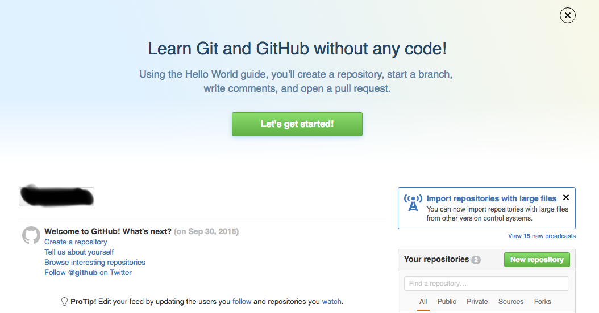
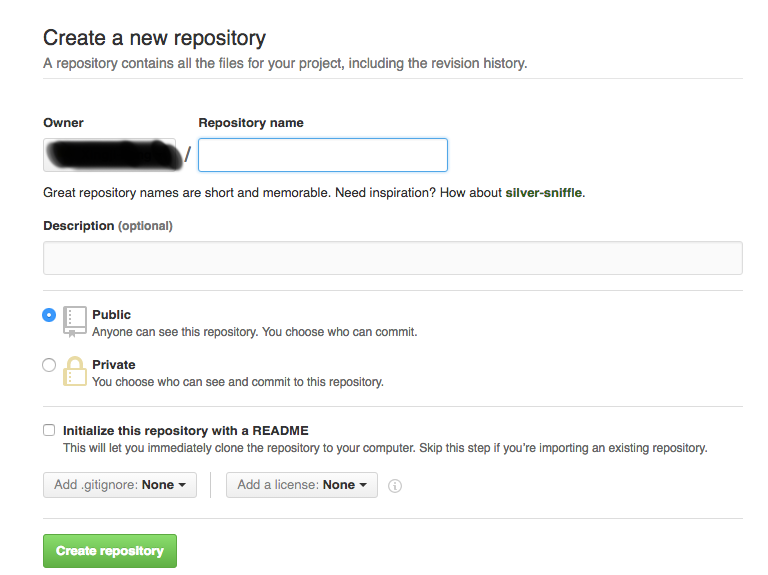

Git勉強ノート(1)SSHでGithubを管理する方法（前）
Gitとは?
Gitというのは、バージョン管理における非常に便利なツールである。それを使いこなせれば、開発は非常に便利になる。Gitを使うことにより、”いつでも、どこでも”のソースコード管理は可能になりました。Gitの基本の操作を飛ばして、いきなりリモート管理について語るのはあんまりよくないが、あくまで自分のためのノードなので、ここはやはり自分が忘れやすいともうことを軸にして記録をしたいです。
今回使った環境
開発環境により、配置の手順が若干異なる可能があるため、始まる前に一応今回使った環境を言っておきます。 OS: OS X EI Capitan 10.11.4 機械：iMac(20-inch, Early 2009) Gitのリモート倉庫：Github
事前準備
まずはGithubのアカウントの取得。Githubとは、ソースコードを保存する倉庫を提供しているウエブサイトで、アカウントを持っていれば、そこにソースコードを保存することができる。そこにアクセスすれば、簡単に登録できます。 登録ができたら、次はレポジトリの作成。Githubにロクインすれば、この画面が出てきて、右下のボータンを押すと、新しいレポジトリを作成できる。  空いてるとところを入力して、レポジトリを作成する。  これが終わったら、初めてだったらまずローカルでGitのユーザーネームやメールアドを設定するする必要がある、ターミナルを開いて、以下のコマンドを打てばいいです： $git config --global user.name "yourname" $git config --global user.name "your_email" 黒い字はそのまま打てばいい内容で、緑字は自分の情報を合わせて書くもんです。 ここまで、準備はオーケーです。